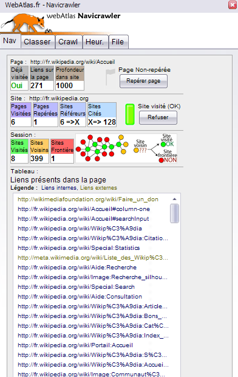

Hyphe
by Mathieu Jacomy, Benjamin Ooghe-Tabanou, Paul Girard
Hyphe: web corpus curation tool & links crawler
Welcome to Hyphe, a research-driven web crawler developped at the Sciences Po médialab for the DIME-SHS Web project (ANR-10-EQPX-19-01).
Hyphe aims at providing a tool to build web corpus by crawling data
from the web and generating networks between what we call "web
entities", which can be single pages as well as a website, subdomains or
parts of it, or even a combination of those.
Demo & Tutos
You can try a limited version of Hyphe at the following url: http://hyphe.medialab.sciences-po.fr/demo/
You can find extensive tutorials on Hyphe's Wiki.
How to install?
Before running Hyphe, you may want to adjust the settings first. The
default config will work but you may want to tune it for your own needs.
There is a procedure to change the configuration after the
installation. However we recommend to take a look at the Configuration documentation for detailed explanation of each available option.
Warning: Hyphe can be quite disk-consuming, a big
corpus with a few hundred crawls with a depth 2 can easily take up to
50GB, so if you plan on allowing multiple users, you should ensure at
least a few hundreds gigabytes are available on your machine. You can
reduce disk-space by setting to false the option store_crawled_html_content and limiting the max_depth allowed.
Migrating older versions
Hyphe has changed a lot in the past few years. Migrating from an
older version by pulling the code from git is not guaranteed anymore, it
is highly recommended to reinstall from scratch. Older corpora can be
rebuilt by exporting the list of web entities from the old version and
recrawl from that list of urls in the new Hyphe.
Easy install: using Docker
For an easy install either on Linux, Mac OS X or Windows, the best solution is to rely on Docker.
Docker enables isolated install and execution of software stacks, which helps installing easily a whole set of dependencies.
Docker's containers are sizeable: you should ensure at least 4GB
of empty space is available before installing. In any case, as
expressed above, for a regular and complete use of Hyphe, you should
better ensure at least 100GB are available.
1. Install Docker
First, you should deploy Docker on your machine following its official installation instructions.
Once you've got Docker installed and running, you will need Docker Compose
to set up and orchestrate Hyphe services in a single line. Docker
Compose is already installed along with Docker on Windows and Mac OS X,
but you may need to install it for Linux.
2. Download Hyphe
Collect Hyphe's sourcecode from this git repository (recommended way
to benefit from future updates) or download and uncompress a zipped release, then enter the resulting directory:
git clone https://github.com/medialab/hyphe.git hyphe
cd hyphe
3. Configure
Then, copy the default configuration files and edit them to adjust the settings to your needs:
# use "copy" instead of "cp" under Windows powershell
cp .env.example .env
cp config-backend.env.example config-backend.env
cp config-frontend.env.example config-frontend.env
The .env file lets you configure:
+ TAG: the reference Docker image you want to work with among
+ prod: for the latest stable release
+ preprod: for intermediate unstable developments
+ PUBLIC_PORT: the web port on which Hyphe will be served
(usually 80 for a single service server, or for a shared host any other
port you like which will need to be redirected)
+ DATA_PATH: using Hyphe can quickly consume several
gigabytes of hard drive. By default, volumes will be stored within
Docker's default directories but you can define your own path here.
WARNING: DATA_PATH MUST be either empty, or a full absolute path including leading and trailing slashes (for instance /var/opt/hyphe/).
It is not currently supported under Windows, and should always remain
empty in this case (so you should install Hyphe from a drive with
enough available space).
+ RESTART_POLICY: the choice of autorestart policy you want Hyphe containers to apply
+ no: (default) containers will not be restarted automatically under any circumstance
+ always: containers will always restart when stopped
+ on-failure: containers will restart only if the exit code indicates an on-failure error
+ unless-stopped: containers will always restart unless when explicitly stopped
If you want Hyphe to start automatically at boot, you should use the always policy and make sure the Docker daemon is started at boot time with your service manager.
Hyphe's internal settings are adjustable within config-backend.env and config-frontend.env. Adjust the settings values to your needs following recommendations from the config documentation.
If you want to restrict Hyphe's access to a selected few, you should leave HYPHE_OPEN_CORS_API false in config-backend.env, and setup HYPHE_HTPASSWORD_USER & HYPHE_HTPASSWORD_PASS in config-frontend.env (use openssl passwd -apr1 to generate your password's encrypted value).
4. Prepare the Docker containers
You have two options: either collect, or build Hyphe's Docker containers.
- Recommended: Pull our official preassembled images from the Docker Store
bash
docker-compose pull
- Alternative: Build your own images from the source
code (mostly for development or if you intend to edit the code, and for
some very specific configuration settings):
bash
docker-compose build
Pulling should be faster, but it will still take a few minutes to download or build everything either way.
5. Start Hyphe
Finally, start Hyphe containers with the following command, which
will run Hyphe and display all of its logs in the console until stopped
by pressing Ctrl+C.
docker-compose up
Or run the containers as a background daemon (for instance for production on a server):
docker-compose up -d
6. Stop and monitor Hyphe
To stop containers running in background, use docker-compose stop (or docker-compose down to also clean relying data).
You can inspect the logs of the various Docker containers using docker-compose logs, or with option -f to track latest entries like with tail.
Whenever you change any configuration file, restart the Docker container to take the changes into account:
docker-compose stop
docker-compose up -d
Run docker-compose help to get more explanations on any extra advanced use of Docker.
If you encounter issues with the Docker builds, please report an issue including the "Image ID" of the Docker images you used from the output of docker images or, if you installed from source, the last commit ID (read from git log).
7. Update to future versions
If you installed from git by pulling our builds from DockerHub, you
should be able to update Hyphe to future minor releases by simply doing
the following:
docker-compose down
git pull
docker-compose pull
# eventually edit your configuration files to use new options
docker-compose up -d
Manual install (complex and only for Linux)
If your computer or server relies on an old Linux distribution unable
to run Docker, if you want to contribute to Hyphe's backend
development, or for any other personal reason, you might want to rather
install Hyphe manually by following the manual install instructions.
Please note there are many dependencies which are not always trivial
to install and that you might run in quite a bit of issues. You can ask
for some help by opening an issue and describing your problem, hopefully someone will find some time to try and help you.
Hyphe relies on a web interface with a server daemon which must be
running at all times. When manually installed, one must start, stop or
restart the daemon using the following command (without sudo):
bin/hyphe <start|restart|stop> [--nologs]
By default the starter will display Hyphe's log in the console using tail. You can use Ctrl+C whenever you like to stop displaying logs without shutting Hyphe down. Use the --nologs option to disable logs display on start. Logs are always accessible from the log directory.
All settings can be configured directly from the global configuration file config/config.json. Restart Hyphe afterwards to take changes into account: bin/hyphe restart.
Serve Hyphe on the web
As soon as the Docker containers or the manual daemon start, you can
use Hyphe's web interface on your local machine at the following url:
- Docker install: http://localhost/
- manual install: http://localhost/hyphe.
For personal uses, you can already work with Hyphe as such. Although,
if you want to let others use it as well (typically if you installed on
a distant server), you need to serve it on a webserver and make a few
adjustments.
Read the dedicated documentation to do so.
Advanced developers features & contributing
Please read the dedicated Developers documentation and the API description.
What's next?
See our roadmap!
Papers & references
Tutorials / examples
Publications about Hyphe
-
JACOMY, Mathieu, GIRARD, Paul, OOGHE-TABANOU, Benjamin, et al, "Hyphe, a curation-oriented approach to web crawling for the social sciences.", in International AAAI Conference on Web and Social Media. Association for the Advancement of Artificial Intelligence, 2016.
-
PLIQUE, Guillaume, JACOMY, Mathieu, OOGHE-TABANOU, Benjamin &
GIRARD, Paul, "It's a Tree... It's a Graph... It's a Traph!!!! Designing
an on-file multi-level graph index for the Hyphe web crawler". (Video / Slides) Presentation at the FOSDEM, Brussels, BELGIUM, February 3rd, 2018.
-
OOGHE-TABANOU, Benjamin, JACOMY, Mathieu, GIRARD, Paul & PLIQUE, Guillaume, "Hyperlink is not dead!" (Proceeding / Slides),
In Proceedings of the 2nd International Conference on Web Studies (WS.2
2018), Everardo Reyes, Mark Bernstein, Giancarlo Ruffo, and Imad Saleh
(Eds.). ACM, New York, NY, USA, 12-18. DOI:
https://doi.org/10.1145/3240431.3240434
Publications using Hyphe
-
ÁLVARO SÁNCHEZ, Sandra, 2019, "A Topological Space for Design, Participation and Production. Tracking Spaces of Transformation", in Journal of Peer Production, Issue 13: OPEN.
-
VENTURINI, Tommaso, JACOMY, Mathieu, BOUNEGRU, Liliana & GRAY, Jonathan, (2018, forthcoming), "Visual Network Exploration for Data Journalists", in S. E. I. and B. Franklin (Ed.). Abingdon: Routledge.
-
FROIO, Caterina, "Nous et les autres. L’altérité sur les sites web des extrêmes droites en France", in Réseaux, 2017/2 (n° 202-203), p. 39-78. DOI: 10.3917/res.202.0039.
-
FROIO, Caterina, "Race, Religion, or Culture? Framing Islam between Racism and Neo-Racism in the Online Network of the French Far Right", in Perspectives on Politics, 16(3) (n° 202-203), p. 696-709, 2018. DOI: 10.1017/S1537592718001573.
-
DESFRICHES-DORIA, Orélie, SERGENT, Henri, TRAN, Félicia, HAETTICH, Yoann & BOREL, Justine (2018), "What
is Digital Humanities' identity in interdisciplinary practices?: An
experiment with digital tools for visualizing the francophone DH network,
In Proceedings of the 2nd International Conference on Web Studies (WS.2
2018), Everardo Reyes, Mark Bernstein, Giancarlo Ruffo, and Imad Saleh
(Eds.). ACM, New York, NY, USA, 39-47. DOI:
https://doi.org/10.1145/3240431.3240439
-
ARZHEIMER, Kai, "The AfD’s Facebook Wall: A new Hub for Right-Wing Mobilisation in Germany?", in American Political Science Association Conference, 2015.
-
PEDROJA, Cynthia, et al. "Dépasser la liste : quand la bibliothèque entre dans la danse des corpus web." Digital Humanities 2016 (DH2016). Jagiellonian University & Pedagogical University, 2016.
-
DE CARVALHO PEREIRA, Débora "Les réseaux d'influence sur le web dans le domaine des produits laitiers".
-
OJALA, Mace "Mining with Hyphe", 2018 (a blog post on Ethos Lab's blog)
-
CREPEL, Maxime, BOULLIER, Dominique, JACOMY, Mathieu, OOGHE-TABANOU, Benjamin, ANTOLINOS-BASSO, Diego, MONSALLIER, Paul "Privacy web corpus", 2017.
-
CAYLA, Nathalie, PEYRACHE-GADEAU, Véronique, La singularité territoriale générée par le déploiement de la marque Parc naturel régional, 2017
-
ROGERS, Richard. Digital Methods for Cross-platform Analysis. J. Burgess, A. Marwick e T. Poell (a cura di) The Sage Handbook of Social Media. London: Sage, 2017.
-
SERRES, Alexandre et STALDER, Angèle. L'EMI sur le web: cartographie d'un domaine en émergence. In: Journée d'étude GRCDI-ESPE de Caen et Rouen,«L’EMI en questions: enjeux, prescriptions, contenus, apprentissages». 2016.
-
BERTHELOT, Marie-Aimée, SEVERO, Marta, et KERGOSIEN, Eric. Cartographier les acteurs d'un territoire: une approche appliquée au patrimoine industriel textile du Nord-Pas-de-Calais. In: CIST2016-En quête de territoire (s)?. 2016. p. 66-72.
-
SCHNEIDER, Élisabeth, SERRES, Alexandre, et STALDER, Angèle. L’EMI en partage: essai de cartographie des acteurs.
In: 10e Congrès des Enseignants Documentalistes de l'Education
Nationale" Enseigner-apprendre l'information-documentation". 2015.
-
KERGOSIEN, Eric, JACQUEMIN, Bernard, SEVERO, Marta, et al. Vers l'interopérabilité des données hétérogènes liées au patrimoine industriel textile. In: CiDE. 18. 18e Colloque international sur le Document Électronique. Europia, 2015. p. 145-158.
-
MUNK, Anders Kristian. Mapping Wind Energy Controversies Online: Introduction to Methods and Datasets. 2014.
-
WARD, Jeremy, CAFIERO, Florian, FRETIGNY, Raphael, COLGROVE, James & SEROR, Valérie. France's citizen consultation on vaccination and the challenges of participatory democracy in health.
Social Science & Medicine. 220. 10.1016/j.socscimed.2018.10.032.
2018. DOI: https://doi.org/10.1016/j.socscimed.2018.10.032
-
ROMELE, Alberto, SEVERO Marta. From Philosopher to Network. Using Digital Traces for Understanding
Paul Ricoeur’s Legacy. Azimuth. Philosophical Coordinates in Modern
and Contemporary Age, Edizioni Storia e Letteratura, 2016, Philosophy
and Digital Traces, VI (6),
Credits & License
Mathieu Jacomy, Benjamin Ooghe-Tabanou & Guillaume Plique @ Sciences Po médialab
Discover more of our projects at médialab tools.
This work is supported by DIME-Web, part of DIME-SHS research equipment financed by the EQUIPEX program (ANR-10-EQPX-19-01).
Hyphe is a free open source software released under AGPL 3.0 license.
[...] I hear _kainos_ [(greek: "now")] in the sense of thick, ongoing
presence, with __hyphae__ infusing all sorts of temporalities and
materialities."
Donna J. Haraway, Staying with the Trouble, Making kin with the Chthlucene p.2
more...
Tesselle
by Arnaud Pichon, Robin de Mourat
Tesselle
A picture annotation web application
Project from FORCCAST
Usage scenarios
Story telling with big images.
Allow the opening and annotations of big images.
Navigate througth annotations to tell a story.
live demo
At some point we will throw a live-demo on github.io
local deployment
Requirements : node >= 8
git clone
npm i
npm start
http://localhost:3000
How it's been made ?
Stack :
- Typescript
- React
- Redux
- Leaflet
- Localforage
- Iiif
I Want Hue
by Mathieu Jacomy
iWantHue
Colors for data scientists. Generate and refine palettes of optimally distinct colors.
iWantHue
allows you to generate palettes of colors. It is about mastering the
properties of a palette by setting a range of Hue, Chroma (unbiased
saturation) and Lightness. You can generate palettes of any size or just
get the generator for a javascript project. The algorithm optimizes the
perceptive distance in the color subspace, ensuring an optimal
readability.
How it works
- K-means or force vector repulsion algorithms ensure an even distribution of colors
- The CIE Lab color space is used for computation, since it fits human perception
- The Hue/Chroma/Lightness color space is used to set constraints, since it is user-friendly
Examples and a tutorial
Idea
The idea behind iWantHue is to distribute colors evenly, in a perceptively coherent space,
constrained by user-friendly settings, to generate high quality custom palettes.
Explanations and an experiment on color theory
More info
more...
SeeAlsology
by Donato Ricci, Density Design (Daniele Ciminieri, Michele Mauri), Benjamin Ooghe-Tabanou, Guillaume Plique, Benoit Verjat

strumentalia-Seealsology
Seealsology is simple tool that allows you to explore in a quick and dirty way the semantic area related to any Wikipedia Page.
To make it simple, it extracts all the links in the "See also"
section producing a graph.
The tool works currently only for the following versions of Wikipedia:
english, french, italian.
Adding other languages requires the identification of the various "See
also" sections. Feel free to contribute identifying them and proposing new languages via pull requests!
Try it here: http://tools.medialab.sciences-po.fr/seealsology/
or here: http://labs.densitydesign.org/seealsology/
Usage
You can take a look at this video tutorial from TantLab: https://www.youtube.com/watch?v=Ipb7DiyDt48
Paste the full link to one or more english Wikipedia articles (one per line).
The "distance" value defines the number of iterations. With distance
1, you'll get the original pages and the ones contained in the "see
also" section.
Increasing the value, the tool will perform the same operation on each
retrieved page.
The "Get parents" button makes the tool also look for pages whose
"See also" sections contain links towards the pages explored and their
children. Note this process is a lot more heavey-demanding for the
browser which has to perform many requests to Wikipedia's API, use it
with caution and avoid it when crawling at a distance higher than 2.
With the "stop words" field it is possible to define wich pages should be discarded.
The software will look for each "stop word" in the article title, if there is a match the article will be discarded.
For sanity and performance reasons, results are cached in the
browser's localStorage for 24 hours, allowing you to quickly regenerate a
previous crawl or restart a canceled one. Click on the "Clear cache"
button to reset cache if you feel like results are not in sync with
Wikipedia pages.
Output
While the data collection is performed, results will be displayed as a
network graph and printed below as a list. Click on a page's name or
node to open the Wikipedia page in another tab.
On the bottom right panel, errors and stopped pages will be printed.
If the crawl raises really too many pages and you cannot wait, you can stop it using the Stop button.
Alternatively, you can look for more connections by adding new seeds from the graph using Ctrl+click on a node.
A "Download" button will allow you to download the results.
Three formats are available:
TSV. A tab-separated table, easily editable in
Libreoffice, Google Sheets, Excel. In the table, each line represent a
connection from the source article to one target article cited in the
"see also" section. The table contains three columns. "Source" contains
the analyzed articles. "Target" contains the collected ones. "Level" is
the distance from the original node.
JSON. The network described as object. It is compatible both with D3.js and sigma.js.
It contains two arrays of objects: the first one containing nodes, the
second one containing edges. Each node and edge is defined as an object.
* GEXF. The network in XML-compliant format, easily importable in Gephi or Manylines, opensource tools for network visualization.
Installation
First install nodeJs, then run from Seealsology's root directory:
npm install
npm install -g bower
npm install -g grunt
bower install
To serve a development instance:
grunt serve
Or to build a static instance for a production server:
grunt build
and serve the dist directory to whatever path you like with your favorite server software.
ScienceScape
by Mathieu Jacomy

ScienceScape
Helpers for scientometrics. Convert files, get networks, visualize stuff from Scopus or Web of Science.
ScienceScape allows to extract the DOIs
(Digital Object Identifiers) from the list of references of a paper. It
adds a column to your table of papers so that you have the list of
cited DOI. You now have the DOI of your papers and the list of DOI of
the papers they cite, so you can build the citation network in another
tool (Table2Net).
More info
Graph Recipes
by Mathieu Jacomy

Table 2 Net
by Mathieu Jacomy

Table 2 Net
Extract a network from a table. Set a column for nodes and a column for edges. It deals with multiple items per cell.
Table2Net allows you to get a network from a table. You will get a GEXF file that you can visualize and analyze with Gephi. You may extract different types of networks from a table. It depends on how you use columns to build the nodes and the edges:
Normal: if you want a single type of nodes, for
instance authors. They will be linked when they share a value in another
column, for instance papers.
Bipartite: if you want two types of nodes, for
instance authors and papers, they will be linked whey they appear in the
same row of the table.
Citation: if you have a column containing references to another one, for instance paper title and cited papers (title)
No link: a single type of nodes, without link
You can add columns as metadata of the nodes and/or edges, you can
set a separator if you have multipe items per cell, and you can set a
column as time if you want a dynamic network.
More info
Khartis
by Atelier de
Cartographie (Patrice Mitrano, Thomas Ansart, Benoît Martin, Antoine
Rio), APYX (Arnaud Pezel), Benjamin Ooghe-Tabanou, Audrey Baneyx
Catwalk
by Benoit Verjat, Donato Ricci

catwalk
A tweet curation tools for humanities
Shortcuts
↑ — previous↓ — next→ — IN← — OUTu — UNDECIDEDs — save
Build Setup
# install dependencies
npm install
# serve with hot reload at localhost:8080
npm run dev
# build for production with minification
npm run build
Hyphe Browser
by Thomas Tari, Benjamin Ooghe-Tabanou, Mathieu Jacomy, Byte Club (Nicolas Chambrier, Bruno Heridet), Donato Ricci, Agata Brill
hyphe-browser
Install
npm install
npm start
Development
npm install
npm run dev
Binary release
npm run release
API notes
https://github.com/medialab/hyphe/blob/master/doc/api.md
create_corpus
- it will answer positively after about 5 seconds if not too many
instances are currently running on the server. The received result is
not a complete corpus object, but rather something like
{ready: true, status: "ready", corpus_id: "foo"}
- if too many instances are running, a negative message will be received right away.
Google Bookmarklets
by Benjamin Ooghe-Tabanou
google-bookmarklets
extract list of results from a google page as csv with bookmarklets
Dev
# Install node dependencies
npm install express https http fs
# Create HTTPS key & certificate
openssl genrsa -out key.pem
openssl req -new -key key.pem -out csr.pem
openssl x509 -req -days 9999 -in csr.pem -signkey key.pem -out cert.pem
rm csr.pem
# Run HTTPS server
node serve-https.js
sigma.js
by Alexis Jacomy, Guillaume Plique

sigma.js - v1.1.0
Sigma is a JavaScript library dedicated to graph drawing, mainly developed by @jacomyal and @Yomguithereal.
Resources
The website provides a global overview of the project, and the documentation is available in the Github Wiki.
Also, the plugins and examples directories contain various use-cases that might help you understand how to use sigma.
How to use it
To use it, clone the repository:
git clone git@github.com:jacomyal/sigma.js.git
To build the code:
- Install Node.js.
- Install gjslint.
- Use
npm install to install sigma development dependencies.
- Use
npm run build to minify the code with Uglify. The minified file sigma.min.js will then be accessible in the build/ folder.
Also, you can customize the build by adding or removing files from the coreJsFiles array in Gruntfile.js before applying the grunt task.
Contributing
You can contribute by submitting issues tickets and proposing pull requests. Make sure that tests and linting pass before submitting any pull request by running the command grunt.
The whole source code is validated by the Google Closure Linter and JSHint, and the comments are written in JSDoc (tags description is available here).
artoo.js
by Guillaume Plique

artoo.js is a piece of JavaScript code meant to be run in your browser's console to provide you with some scraping utilities.
The library's full documentation is available on github pages.
Contribution

Contributions are more than welcome. Feel free to submit any pull
request as long as you added unit tests if relevant and passed them all.
To install the development environment, clone your fork and use the following commands:
# Install dependencies
npm install
# Testing
npm test
# Compiling dev & prod bookmarklets
grunt bookmarklets
# Running a test server hosting the concatenated file
npm start
# Running a https server hosting the concatenated file
# Note that you'll need some ssl keys (instructions to come...)
npm run https
Authors
artoo.js is being developed by Guillaume Plique @ SciencesPo - médialab.
Logo by Daniele Guido.
R2D2 ascii logo by Joan Stark aka jgs.
Sandcrawler
by Guillaume Plique

sandcrawler.js is a node library aiming at providing developers with concise but exhaustive tools to scrape the web.
Disclaimer: this library is an unreleased work in progress.
The library's full documentation is available on github pages.
Contribution

Contributions are more than welcome. Feel free to submit any pull
request as long as you added unit tests if relevant and passed them all.
To install the development environment, clone your fork and use the following commands:
# Install dependencies
npm install
# Testing
npm test
Authors
sandcrawler.js is being developed by Guillaume Plique @ SciencesPo - médialab.
Logo by Daniele Guido.
CSV Rinse Repeat
by Mathieu Jacomy

CSV Rinse Repeat - CSV grooming, the JS way
The idea
You have a CSV and you need to transform it into a better CSV, which
includes filtering, clustering, parsing, merging, (...) and matching
regular expressions. Why not doing it in JS? You're welcome.
Just use it
http://tools.medialab.sciences-po.fr/csv-rinse-repeat/
Installing
# install dependencies listed in bower.json
$ bower install
Using
Browse to the app/ directory, upload a CSV, add visualizations, code javascript.
Gazouilloire
by Benjamin Ooghe-Tabanou
Gazouilloire
Twitter stream + search API grabber handling various config options
such as collecting only during specific time periods, or limiting the
collection to some locations.
HowTo
sudo apt-get install mongodb-10gen
pip install -r requirements.txt
"twitter": {
"key": "<Consumer Key (API Key)>xxxxxxxxxxxxxxxxxxxxx",
"secret": "<Consumer Secret (API Secret)>xxxxxxxxxxxxxxxxxxxxxxxxxxxxxxxxxxxxxxxxxxx",
"oauth_token": "<Access Token>xxxxxxxxx-xxxxxxxxxxxxxxxxxxxxxxxxxxxxxxxxxxxxxxxx",
"oauth_secret": "<Access Token Secret>xxxxxxxxxxxxxxxxxxxxxxxxxxxxxxxxxxxxxxxxx"
}
- Write down the list of desired keywords as json array.
json
"keywords": [
"amour"
],
Note that there are two possibilities to filter further:
- geolocalisation mode: just add
`"geolocalisation": "Paris, France"
field to the config with the desired geographical boundaries or give in
coordinates of the desired box as shown in the config example file
- time limited keywords mode, in order to filter on specific keywords during planned time period:
json
"time_limited_keywords": {
"#m6": [
["2014-05-01 16:00", "2014-05-08 16:05"],
["2014-05-08 16:00", "2014-05-08 16:05"],
["2014-05-15 16:00", "2014-05-08 16:05"],
["2014-05-22 16:00", "2014-05-08 16:05"]
],
"bieber": [
["2014-05-08 16:00", "2014-05-08 16:05"]
]
},
./gazouilloire/run.py
- Data is stored in your mongo, you can also export it easily with simple scripts such as those in the
bin directory:
# To export a csv with the most useful fields:
bin/export_csv.py
# To export the whole text content of the tweets:
bin/export_all_text.py
pyGEXF
by Paul Girard
pyGEXF
easy_install method
pygexf is hosted in pypi.python.org.
Thus you can use easy_install from setuptools to install it.
First install setup tools if not already in your system : http://pypi.python.org/pypi/setuptools
Then it's quite easy :
$ sudo easy_install pygexf
to check :
$ python
>>> import gexf
If no errors are raised then you're done.
embed pygexf in your project
This is a quick and durty method. Use easy_install instead.
(but still sometime usefull)
pygexf is a single file package.
You can decide not to install it in your python environement but directly in your source where you need it.
In such case go directly to the soruce repository :
http://github.com/paulgirard/pygexf
Download the gexf directory to your source.
$ls
gexf
$python
>>> import gexf
no errors ? (remember to install lxml first !)
you're done.
more...
Manylines
by Mathieu Jacomy, Guillaume Plique, Alexis Jacomy, Paul Girard, Daniele Guido

manylines
Explore networks and publish narratives.
Installation
1) Node.js
manylines runs on Node.js. If you do not have it installed yet, refer to its website.
2) Couchbase
If you do not have an instance of Couchbase running, you'll have to
install one or decide to work on a Mock and skip this step. Note that in
Mock mode, graphs will be deleted when the application stops.
Example for Debian/Ubuntu
# Downloading package
wget http://packages.couchbase.com/releases/2.2.0/couchbase-server-community_2.2.0_x86_64.deb
# Installing package
sudo dpkg -i couchbase-server-community_2.2.0_x86_64.deb
# Then go to localhost:8091 to setup
For other distributions, please refer to the couchbase site.
N.B.: manylines currently uses a 2.x.x version of Couchbase.
3) Application
# Clone the app
git clone git@github.com:medialab/manylines.git
# Install its dependencies
npm install
# Copy the sample config and fill in the needed information
cp config.sample.json config.json
Usage
Starting the app
For development
npm start
For production
# Build assets
gulp
# Starting app
NODE_ENV='prod' npm start
The application will then be available through server:8000/app.
more...
HeatGraph
by Mathieu Jacomy

Heatgraph
Visualize densities on spatialized networks. Get a global heatmap or a heatmap of the neighborhood of a given node.
Heatgraph allows to upload a GEXF graph from (Table2Net) or Gephi. Choose settings and produce a heat map of your network.
More info
ANTA, actor-network text analyzer
by Daniele Guido, Paul Girard
ANTA, actor-network text analyzer
ANTA or Actor Network Text Analyzer is a piece of software developed
by the Sciences Po médialab to analyses medium-size text corpora, by
extracting the expressions they contained in a set of texts and drawing a
network of the occurrence of such expressions in the texts.
goals
Anta is a web platform based on Zend Framework which serves two main goals:
- simplify as much as possible the researchers' workflow in text analysis
- build a graph based onto the set of documents dealing with co-word analysis
Using ANTA is very easy. We will introduce its usage by reading the image displayed on the login page of the software.

the 5 steps workflow
Using ANTA requires going through 5 different steps: the researchers'
workflow has been subdivided into 5 main steps, from the creation of
the corpus to the words extraction (the so-called entities)
As soon as users have uploaded their texts and while their are tagging
them, the system works in background analyzing the texts to extract the
expressions occurring in them. To do so, Anta draws on Alchemy
(Orchestr8 text API). Thanks to Alchemy, Anta identifies the n-grams
(expressions of n-words) recurring in the text and is even capable to
recognize 'named entities' as such. It knows, for example, that Alice is
a person name, that France is a country and Paris a city. The
expressions identified by Anta are called entities.
- Step one. Include documents, via upload or import.
First of all users are asked to upload the texts composing their
corpus in the system. ANTA can read txt and pdf documents, and it has a
doc support via catdoc.
- manual upload
- import google results (up to 100 documents per query)
-
import via json api
-
Step two. Tag documents and selection of subsets.
After having uploaded all their texts, users are asked to categorize
them according to the classification that best suits their research
interests. Documents, for example, can be tagged by author, by type, by
subject and any other taxonomy used by the researcher.
- tag based selection to focus on small subsets
-
google spreadheet import / export of the list of documents (limited features)
-
Step three. Include entities.
Once the system has concluded its extraction, users are asked to chose
which entities they want to include in their analysis and which one the
one to exclude. Even for relatively small corpora, the number of the
extracted entities is often surprisingly large, to large for a manual
filtering. ANTA offers an semi-automatic filtering system that help
users reduce the number of the entities they will analyze.
-
entities selection through visual TF/IDF measures
-
Step four. Tag entities, and merging as well.
In order to facilitate the analysis the included entities can be
tagged by the users according to the classification best suits their
research interests. It is also possible to merge entities that are
synonymous for the scope of the research.
-
Step five. Export the graph.
The last step consists in exporting the graph of tagged documents and
tagged entities. ANTA exporting system delivers a gefx file containing a
bipartite network of documents and entities. Two nodes of the network
are connected if the corresponding document is connected to the
corresponding entity.
features
Anta executes a script - the "distiller" - for each document of the corpus which performs a sequence of processes decided by the user.
- chainable plugin structure
- one click analysis start and smart logging
- JSON api interfaces
- standard api, providing basic methods to upload, tag
- a "frog" api, relationships between documents and entities, lite api driven search engine
- a "squid" api, that implements the entities tf/idf visualization
external dependencies
Anta makes use of external text analysis services, like Alchemy Api from Orchestr8 http://www.alchemyapi.com/
- Php libraries:
- zend
- Python libraries:
- nltk for stemming features and sentences tokenizer, cfr. http://www.nltk.org/
- beautifulsoup, cfr. http://www.crummy.com/software/BeautifulSoup/
- networkx, cfr. http://networkx.lanl.gov/
more...
ZUP
by Daniele Guido
zup
a simple interface to extract texts from (almost) any url.

installation
Clone the repository and its submodules
clone --recursive https://github.com/medialab/zup.git zup
If --recursive options is not available, consider using these command to install submodules
cd zup
git submodule init
git submodule update
Create and activate a dedicated virtualenv for zup. If you're not sure, please follow this how-to
Install then the dependencies via pip packages:
cd zup
pip install -r requirements.txt
Some python package that zup requires, like lxml, needs some other
libraries to be available. On unix environment, make sure the
development packages of libxml2 and libxslt are installed.
sudo apt-get install libxml2-dev libxslt1-dev python-dev
In case, you are using Ubuntu/Lubuntu 13.04 or Ubuntu 13.10 and
having problem with "/usr/bin/ld: cannot find -lz", you may need also
install zlib1g-dev package.
sudo apt-get install zlib1g-dev
Configuration
Once installation has been completed, there is one more step: configuration.
cd zup
cp local_settings.py.example local_settings.py
And modify these two lines according to your own virtualenv
SECRET_KEY = 'your own generated secret key'
PYTHON_INTERPRETER = '<your virtualenv path>/.virtualenvs/zup/bin/python'
Also define in which directories you want to install Django's static files:
STATIC_ROOT = '<your own path>/static'
MEDIA_ROOT = '<your own path>/media'
Run
Zup needs a light sqlite database
cd zup
python manage.py syncdb
python manage.py test
python manage.py collectstatic
Test your installation with
python manage.py runserver
Drive-In
by Daniele Guido, Davy Brown
drive-in
publish a simple website from a public google drive folder without coding in HTML.
Only some markdown syntax are required for bold or italic
Everythiong else is driven by googledocs!
advanced usages
You can use drive-in in conjunction with editey
in order to work directly with html files - with google drive realtime
comments and edits. If you decide to use html and personal css files,
you must set the folder permission to "publicly visible on the web".
How to install
Drive-in show in a "one page" manner the files and the subfolders of one (public) google drive folder.
Drive-in generates menu entries from the subfolders list and simply print on screen the google docs contents as html respecting the alphabetic ordering.
Here are the default settings :
var settings;
(function() {
'use strict';
settings = {
title: 'drive-in',
baseurl: '', // your base url useful for subpath, if any.
sharing_link: 'https://drive.google.com/folderview?id=XXXXYYYYZZZZ&usp=sharing',
CLIENT_ID: 'your (public!) api key',
SCOPES: 'https://www.googleapis.com/auth/drive',
};
})();
- you also need to launch a server that will serve drivein sources (like python -m SimpleHTTPServer or http-server for example)
- you need to add a host to your /etc/hosts file that will point to
your server. This is required because drive's api doesn't allow to be
called from localhost.
- now you can launch your browser at your server's URL and append to it the id of the folder where your drive data resides
Q&A
"I want to add a bookmark (internal link) into a google document"
In Google Docs, the links between different parts of the same documents are made by bookmarks. Drive-in can recognize those links and transform them in html anchor links.
"... and if I want to use vimeo videos?"
Simply insert a link to your video in the document. It will be converted to an embedded video.
configure google analytics
Thanks to angularytics. The google analytics script is executed directly inside index.html. Every step in every angular view is quietly recorded.
Navicrawler
by Mathieu Jacomy

issue 2 navicrawler
by Paul Girard
webcorpus
A python library to transform a issuecrawler xml file into a navicrawler wxsf (xml) file format.
issuecrawler
A crawler for Social scientists designed and hosted by the digital method initiative.
Give the tool a list of url (or a web page containing urls) and let's crawl.
You can set the crawler in snowball or co-link analysis.
For more info : http://www.issuecrawler.net
navicrawler
A firefox plugin to equip Social scientists to build web corpus.
It had been designed by Mathieu Jacomy.
With this tool you crawl the web by browsing, building your corpus little by little
For more info : see web atlas website
use it online